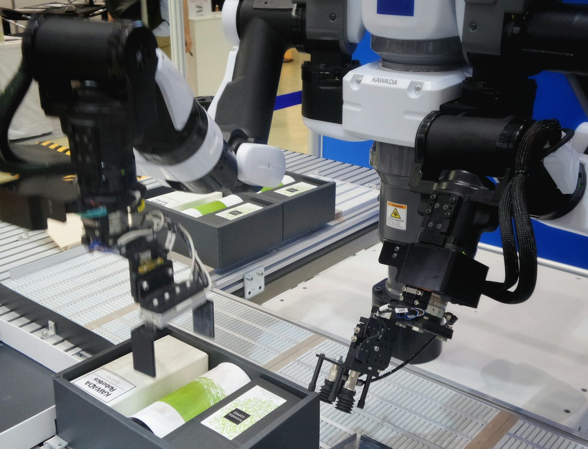
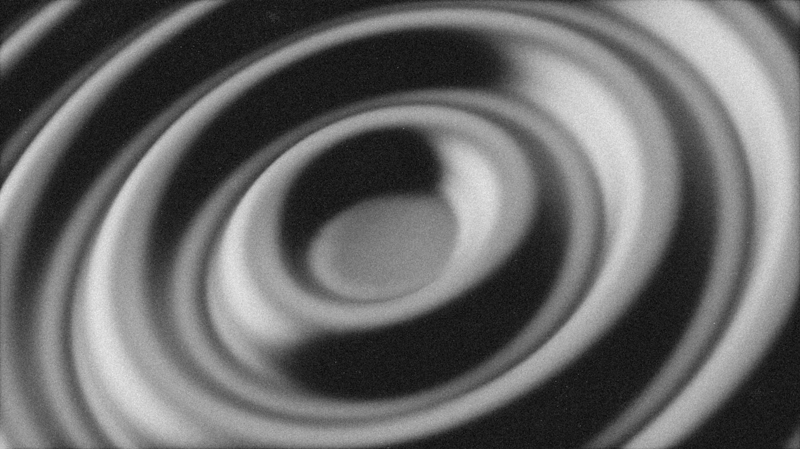

産業爆発の隠れた前提は、ロボットがロボットを作ることだ

2025年5月、Forethought Researchが公開した論文「The Industrial Explosion」は、AGI以後の10年で地球上に数十億台のヒューマノイドが稼働し、水星が解体され、太陽の周囲にダイソンスウォームが出現しうると書いた。同じ月、Epoch AIのEge ErdilとTamay Besirogluは、標準的な半内生的成長モデルにAI労働を代入すると産出は超指数関数的に発散すると結論づけた。Carl Shulmanは80,000 Hoursのインタビューで、初期倍増時間はおよそ1年、経験曲線が重なれば数週間、最終的には数日に達すると述べている。
これらはSFではない。ノーベル経済学賞を受けたポール・ローマーの内生的成長理論を継承し、Chad Jonesの半内生的モデルで実証的に校正され、Bloom-Jones-Van Reenen-Webbの論文で測定された収穫逓減係数を入力とする、経済学の主流フレームワークが吐き出す数字である。
ここで問うべきは規模感の真偽ではなく、議論の骨格だ。これらの予測はどれも、ある一点で成立している。物理資本の自己複製が可能になるという仮定である。ロボットがロボットを作り、工場が工場を作る。言い換えれば、労働が資本と同じように蓄積可能な生産要素に変わるという仮定。この一点が成立しなければ、技術爆発は数字の上では起きても、物理経済は動かない。
多くのAGI論はこの仮定を前提に組み込まない。「AIが研究を加速する」で止める。だがForethoughtとEpochを注意深く読めば、彼らの産業爆発は例外なくロボット自己複製を暗黙の前提として持っている。AGIがGDPを桁で押し上げるという予測の裏側で、静かに要求されているのはこの一行だ。人間の手を介さずに物理資本が増殖できるかどうか。
言及されない前提
産業爆発の定量モデルはすべて、ロボットが自分自身を含む資本財を複製できる状態を仮定している。
仮定の帰結
この一行が成立した瞬間、労働は資本化し、生産関数の性質そのものが切り替わる。
この記事の立場
ロボット自己複製はAGIの応用ではない。産業爆発シナリオの必要条件であり、ここを越えるか否かで未来は二つに分岐する。
自己複製ループを閉じるまでの工学的困難 — 何が足りないか
自己複製ロボットという言葉は誤解されやすい。一台のヒューマノイドが分裂するわけではない。Forethoughtが指摘する通り、実態は採掘・精錬・部品加工・組立・検査・物流・発電までを含む工場群全体の閉ループである。この閉ループが閉じるためには、人間の手が介在する作業ステップが一つも残ってはならない。AGI論が示す産業爆発の数字は全て、この閉ループが成立した後の話だ。しかし閉ループを成立させるまでの工学的困難を、定量的に論じた研究はほとんどない。そこが問いの本体になる。
現在の自動化技術の最大の限界は、採掘と精錬の領域にある。半導体製造に必要な超高純度シリコン、銅、タングステン、コバルト、希土類金属は、採掘から精錬まで多段階の工程を要し、各工程で異なる環境と異なる材料特性への適応が求められる。地下採掘の環境は構造化されておらず、現在の産業ロボットが最もソフトな設定で作業する工場環境とは根本的に異なる。2025年時点で完全無人化されている採掘現場は存在しない。遠隔操作と自動化の組み合わせが最先端であり、人間の判断が完全に排除されるまでの距離は年単位ではなく十年単位の開発投資を要するとされている。
半導体製造の無人化はさらに困難だ。最先端の半導体は、ナノメートル単位の精度で何百もの工程を経て製造される。各工程で使う化学物質の組み合わせと、反応条件の微調整に熟練エンジニアの判断が不可欠であり、この判断をAIに完全に移譲した工場はTSMCも含めてまだ存在しない。クリーンルームの維持管理、装置の校正、欠陥の検出と対処。これらのステップのどこか一つでも人間の介入が必要であれば、閉ループは閉じない。AGIが設計図を自動生成できたとしても、設計図を物理的に製造する工場ラインが人間から独立していなければ、自己複製は成立しない。
現在の自動化の限界点 — 閉ループまでの主要ボトルネック
非構造化環境での採掘 地下採掘と開放採掘は環境が予測不能だ。岩盤の硬度、地下水、気温の変化への即時適応を現在のロボットは担えない。完全無人採掘の実証事例はゼロ。
精錬プロセスの複雑性 高純度素材の精錬は多段階の化学工程であり、各段階で材料の状態を検査し条件を調整する。この判断を人間なしに行う自律制御系は研究段階にある。
半導体製造の熟練工依存 最先端FABの製造工程には数千人の熟練エンジニアが必要だ。プロセスの異常検知、装置のトラブルシューティング、新プロセスへの適応は人的経験に依存する。
ロボット自体のサプライチェーン ヒューマノイドロボットはモーター、センサー、バッテリー、制御基板を要する。これらの部品自体を製造する設備のほぼ全てに人間が関わっている。「ロボットがロボットを作る」の前段として「ロボットの部品を作る」が解決されていない。
工学的困難は資本と時間で削れるか
AGIが問題の性質を変える可能性 採掘ロボットの制御問題、精錬の自律制御、半導体プロセスの自動最適化は、いずれもAIが設計し直すことで解法の空間が変わる。AGI以前に解けなかった問題がAGI以後に解けるようになるのか、が核心だ。
並列投資の加速効果 AGIが到達した後、採掘・精錬・半導体製造の全ての工学的問題に同時に膨大な研究資源が投入されるシナリオでは、個別の技術的困難を乗り越える時間が圧縮される可能性がある。
タイムラインの不確実性 各ボトルネックを解くのに要する時間は、現時点では高い不確実性を持つ。Forethoughtは数年、懐疑論者は数十年と見る。この差は産業爆発のシナリオが実現するタイムラインに直接影響する。
代替経路の可能性 閉ループを達成しなくても、自動化の深化が進むだけで経済成長は加速する。完全な自己複製の代わりに「90%自動化」でどれだけの効果があるかという問いは、産業爆発と別の重要な議論だ。
経験曲線が動くための前提条件 — 閉ループなしに倍増時間は短縮しない
産業爆発の数字が最も依存するのが経験曲線の効果だ。累積生産量が倍増するたびにコストが一定割合で低下するという経験則は、太陽光パネル・リチウムイオン電池・半導体の半世紀にわたるデータで観測されてきた。Forethoughtがロボット関連産業に同じ係数を当てはめると、ロボットの製造コストは急速に落ちる。コストが落ちれば同じ資源でより多く作れる。倍増時間が短縮する。倍増時間が短縮すれば、さらに多くの資源でより速く増やせる。これがForethoughtの計算の骨格だ。ただし、この骨格には重要な前提が埋め込まれている。
経験曲線が高速で動くためには、増産の主要なボトルネックが「作る数が少ないからコストが高い」という問題に限定されている必要がある。しかし現在の自動化技術の限界を見ると、ボトルネックはそこだけにない。採掘・精錬・半導体製造の各工程に人間の判断が不可欠なままであれば、生産量を増やすことと人的投入を増やすことが連動し、閉ループが閉じない。閉ループが閉じない状態では、経験曲線のコスト低下は通常の製造業と同じペースで起きるにすぎず、倍増時間の劇的な短縮は起きない。つまり経験曲線の仮定は閉ループの成立を前提にしている。前提が先、効果が後だ。
Forethoughtの試算では倍増時間は最初の1年から数ヶ月、数週間、最終的には数日へと短縮する。この曲線は説得力がある。しかしその曲線が始まる起点、閉ループが成立した瞬間に至るまでの工学的な道のりは、試算の中で明示的に扱われていない。採掘・精錬・半導体製造の無人化という前提は、計算の外に置かれている。産業爆発の議論を評価するとは、この曲線の形を評価することではなく、曲線が始まる起点に至るまでの距離を評価することだ。
倍増時間 約1年
ヒューマノイドの初期生産。太陽光パネルや電気自動車が過去に見せた倍増ペースと同じ水準。
倍増時間 数ヶ月
経験曲線によるコスト低下が積み上がり、自己複製ループが閉じる。ここから物理経済は人間の認知を離れる。
倍増時間 数日
技術爆発による設計改善が加わり、バクテリア並みの自己複製速度が射程に入る。
縦軸は対数スケール。経験曲線のコスト低下率を80%と置くとShulmanの計算では数式上5年で倍増時間が発散する。
Forethought Research / Shulman 80,000 Hours
自己複製と技術爆発が噛み合ったとき、産業爆発は単なる副産物になる

ここまでの三段を繋ぎ直す。AGIが知能を自己加速する技術爆発は、単体では物理世界を変えない。新素材の論文がいくら出ても、それを作る工場と発電所がなければ図面のままで終わる。逆にロボットがロボットを作るだけでも足りない。倍増時間が固定されたままでは地球規模には届かない。産業爆発が成立するのは、二つのフィードバックが噛み合った瞬間に限られる。
噛み合い方は具体的だ。技術爆発側で走っているAI研究は、ロボット設計、制御、材料、バッテリー、製造プロセスの全レイヤーに同時に流れ込む。設計が改善されるたびに経験曲線の下降が加速する。経験曲線が下がるほど単位資源あたりの生産量が増え、増えた生産量がエネルギーと計算資源を増やす。増えたエネルギーがAI推論とロボット稼働の両方を賄い、増えたロボットが採掘と製造を加速し、増えた製造実績がさらにコストを下げる。入力が産出を増やし、産出が入力を増やす。ループの中に止める場所がない。
Shulmanの計算で経験曲線のコスト低下率を80%と置くと、倍増時間は数式上5年で発散する。現実にはエネルギー供給と熱放散と採掘速度で上限が来るが、その上限自体が物理法則で定まる水準にある。Forethoughtの評価では、数日で倍増する産業基盤があれば水星の解体は半年、1週間で倍増するペースでも太陽系レベルのエネルギー収集網の主要部が数年で構築できる。立ち止まる理由は物理ではなく、規制と戦略判断の側にしかない。
| Layer | Feedback | What Accelerates Next |
|---|---|---|
| 知能 | AIがAI研究を加速。推論効率と計算量が年間25倍で増える試算。 | ロボット設計、材料、制御ソフトの進化速度。 |
| 物理 | ロボット自己複製ループが閉じ、労働が蓄積可能な要素に変わる。 | エネルギー供給、採掘、製造、計算資源の同時拡大。 |
| 経験曲線 | 累積生産量の倍増ごとにコストが半減。倍増時間が短くなっていく。 | 次世代ロボットの設計サイクルと製造サイクルの両方。 |
| 結果 | 三層が同時に噛み合い、超指数関数的な拡大が始まる。 | 地球の産業基盤から太陽系スケールのインフラへ。 |
閾値を越えないシナリオの実像 — 道具として強力だが閉ループにならない世界
AGIをめぐる議論は「いつ来るか」で擬装されているが、本当の分岐点はそこにない。分かれているのはタイミングではなく、ロボット自己複製が成立するかどうかの一点だ。越えるシナリオは明快だ。労働が資本化し、倍増時間が数日に達し、太陽系スケールの資源収集が数十年の視野に入る。しかし議論の深刻な欠落は「越えないシナリオ」の具体的な描写にある。越えないシナリオは「AGIが来ない世界」ではない。閾値を越えるための最後の壁が残り続ける世界だ。
越えないシナリオの物理的な根拠は、採掘・精錬・半導体製造の完全無人化が、少なくとも数十年単位で実現しないことにある。AGIが設計図を自動生成しても、設計図を製造する工場が人間の判断を必要とし続ける限り、生産量の拡大は人的投入の拡大と切り離せない。そこに資本を大量に投入しても、資本が人的判断を代替するわけではない。人的投入の速度は生物学的な制約に縛られており、年率数%の増加が限界だ。この制約が残る間、ロボットの台数は増えるが、倍増時間は数年単位に留まる。
閾値を越えないこの世界で何が起きるかを具体的に描く。知能爆発は先行する。ホワイトカラーの作業の大半はAIに移管され、研究開発の生産性は数倍から十数倍に上がる。ソフトウェアとコンテンツとサービス業は根本から再設計される。物理的なインフラの建設は加速するが、工期の短縮には限界がある。核融合炉や新素材は研究が進むが、製造スケールアップは従来の速度で進む。GDPは押し上がるが、桁で跳ねない。現在のデジタル経済の延長として、AIがほぼすべての知的作業を担うが、物理的な蓄積は依然として人口動態と資本投下の速度に縛られたまま進む。
この世界は惨めではない。AGIによる知能の解放だけでも、医療、材料科学、気候対策、生物学における問題解決の速度は前例のない水準に達する。ただし産業爆発シナリオが想定する文明スケールの変容は起きない。重要なのは、越えないシナリオが「技術の失敗」ではないことだ。完全な閉ループを達成しない状態でも、AIと部分的に自動化されたロボットの組み合わせは、今日の産業を根底から変える強力な道具になる。その道具の組み合わせが、閾値を越えるための最後の工学的ボトルネックを削り続ける、というフィードバックが最終的に閾値を越えさせる可能性も排除できない。
閾値を越えるための最後の壁 — 何が残るか
採掘の完全無人化 地下採掘と開放採掘の完全自律化。非構造化環境への適応能力と設備の故障対応は、AGIでも工学的に困難な課題として残る可能性がある。これが最初の壁。
半導体製造プロセスの完全自律化 熟練エンジニアの暗黙知をAIに移管する問題。プロセスの異常検知と即時対応が完全に自動化されるまで、最先端チップの製造は人間に依存する。
エネルギーインフラの自己展開 採掘と製造を動かすエネルギーを、新たなエネルギーインフラが自律的に拡張しながら供給できるか。太陽光発電の展開自体はロボットで可能だが、送電網の構築と管理は複雑な判断を要する。
閾値はひとつではない 採掘・半導体・エネルギーの三つが同時に閉ループを成立させる必要がある。一つが解決しても他が残れば、ループは開いたままだ。最後の一つが最も困難で、最も予測が難しい。
越えない世界と越える世界の実質的差異
GDPの成長軌跡 越えない: 年率10-20%の高成長が続き、50年で数十倍。越える: 数年で100倍を超え、その後は指数的に発散。両者の差は1世代で別の文明を意味する。
物理インフラの蓄積速度 越えない: 人的制約に縛られ、建設は年率数%の拡大。越える: 数年で地球規模、数十年で太陽系規模のインフラが可能になる。この差が文明の物理的サイズを決める。
知識と物理の非対称性 越えない世界では、知識と情報は指数的に増えるが、物理的な蓄積は線形に近い速度で積み上がる。この非対称性が経済の性格を規定する。デジタル財は過剰、物理財は依然として稀少。
どちらの設計が可能か 越えないシナリオを意図的に選ぶことは政治的に可能だ。採掘・半導体製造の完全自動化を禁止する規制は、人的介在の義務付けという形で設計できる。越えるシナリオを選ぶことの選択も、規制の撤廃と資源投入という形で設計できる。